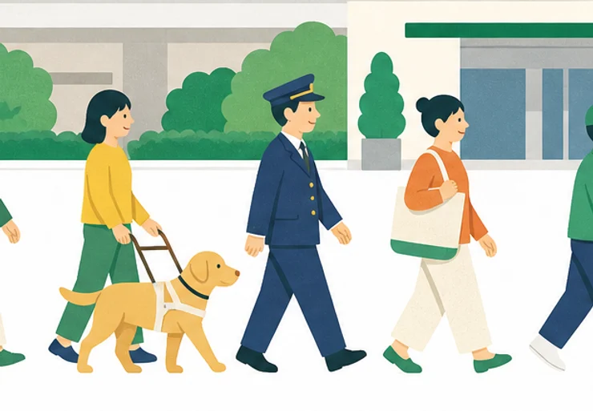

01
鉄道事業
碧原本線と湊台線の運行、駅の運営、車両と線路の保守。1日におよそ32万人のお客さまが利用します。
鉄道会社の採用というと、駅や電車の仕事を思い浮かべる方が多いと思います。実際には、時刻表をつくる人、駅のエレベーターを設計する人、駅ビルのテナントと話す人、経理や人事の仕事をする人もいます。仕事の種類が多いので、得意なことと苦手なことの組み合わせに合う仕事が見つかりやすい会社です。
私たちは、配属を決める前に必ず本人と話し、職場を見てもらってから決めています。履歴書だけでは分からないことを、時間をかけて確かめたいからです。応募を迷っている段階でもかまいません。まずは話を聞きに来てください。
碧原鉄道株式会社 人事部 採用担当一同

鉄道を中心に、駅と沿線にかかわる五つの事業を行っています。障がいのある社員は、このすべての事業で働いています。
碧原本線と湊台線の運行、駅の運営、車両と線路の保守。1日におよそ32万人のお客さまが利用します。
碧原中央駅ビルをはじめとする駅の商業施設と、沿線の賃貸住宅・オフィスビルを運営しています。
湊台の港に近い倉庫を拠点に、沿線の店舗や工場へ荷物を運んでいます。
駅と車両基地の電気設備を管理し、屋根に置いた太陽光パネルの電気を駅の照明などに使っています。
沿線の観光案内所と季節のイベントを運営し、グループのホテルと一緒に、碧原の街を訪れる人を迎えています。
駅ビル、物流、ホテル、ビル管理などのグループ会社でも、障がいのある方を採用しています。
路線は二つ。勤務地を選べるエリア総合職は、この沿線のなかから職場を決めます。
1926年
蒸気機関車で、碧原中央から湊台まで1時間20分かかりました。
1958年
港で働く人の通勤のために、湊台から碧原港までの線路を延ばしました。
1972年
駅の上に商業施設をつくり、駅ビル事業をはじめました。
1996年
湊台の倉庫を拠点に、沿線の店舗への配送を引き受けるようになりました。
2008年
清掃、印刷、データ入力の仕事を中心に、障がいのある社員が働く会社をつくりました。
2019年
社員の提案から、話す以外の手段でも案内できる窓口に変えました。
2023年
配属先を本人・職場・人事の三者で決める進め方を、全社の採用に広げました。